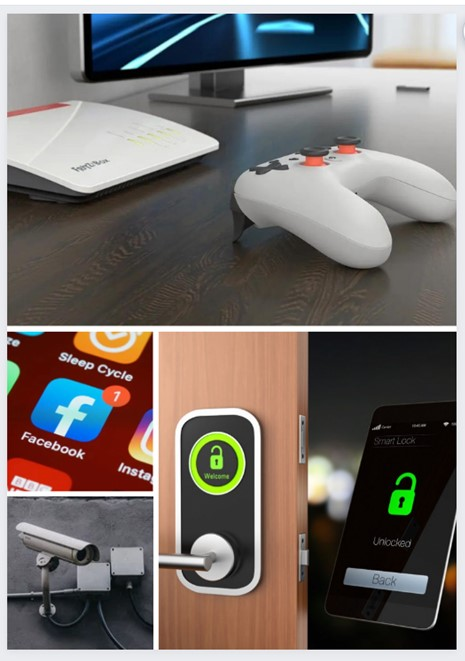

| Velox Liberty es la versión más avanzada y equipada de nuestra gama de soluciones de voz y datos, que ofrece a empresas e instituciones una plataforma integral para gestionar sus necesidades de conectividad, comunicación y seguridad. Este paquete de servicios es ideal para organizaciones que buscan consolidar múltiples aspectos de sus operaciones bajo un mismo techo y garantizar un rendimiento excepcional en cada uno de ellos. |  |
De querer personalizar o agregar objetos al paquete tendra un costo adisional de 1300 a 2100 pesos segun lo que agregue
Con Veloxity, la innovación y el éxito se encuentran a solo una llamada de distancia. Acompáñenos en este emocionante viaje hacia la transformación de su negocio a través de la excelencia en comunicaciones..